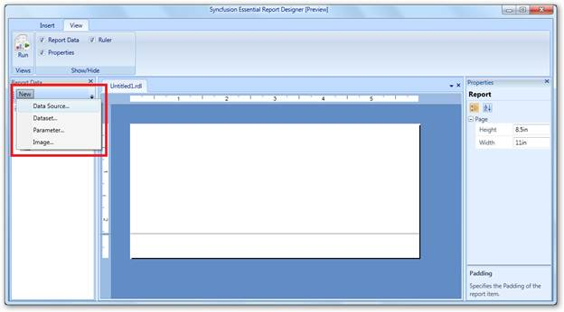
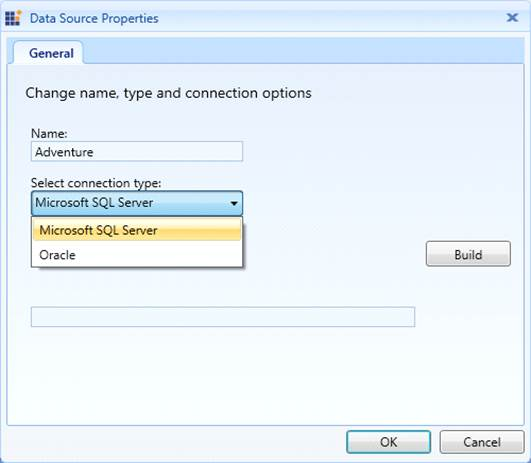
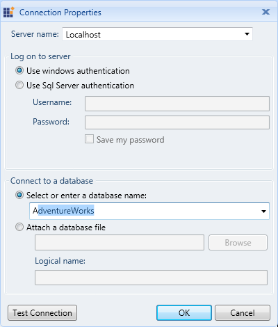
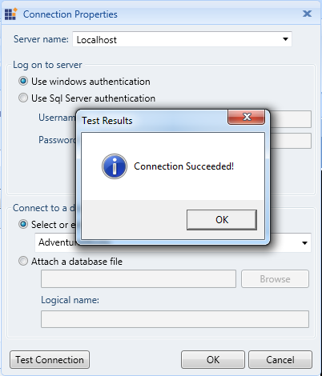
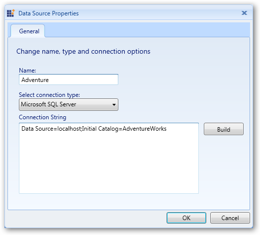
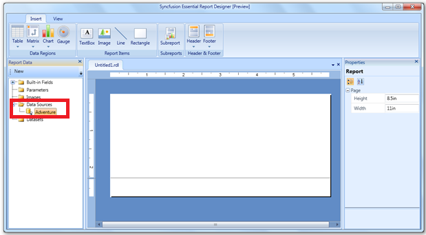

This feature allows users to add a data source to the Report Designer. It will bind the database from the server. The following steps are used to add the data source to the Report Designer.
1. In Report Data group, click New, and then click Data Source.

Figure 7: Essential Report Designer
2. Enter the data source name in the Name field, and then select the needed connection type from Select connection type drop-down.

Figure 8: Data Source Properties
3. Click Build. The Connection Properties dialog will open.

Figure 9: Connection Properties
4. Enter the server name in Server name field, and then select or enter a database name in the Select or enter a database name drop-down combo box.
5. Click Test Connection to check the server connection. The Test Results dialog box will be displayed after completing the connection check.

Figure 10: Successful Connection Test
6. Click OK. It will provide a connection string for the data source.

Figure 11: Connection String
7. Click OK. The data source (Adventure) will appear in the Report Data panel.

Figure 12: Data Source in Report Designer